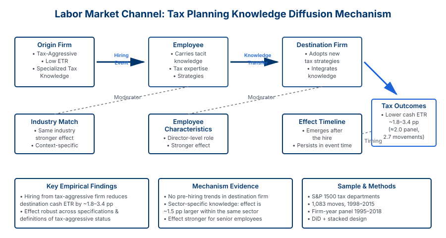

Abstract
We examine how tax planning knowledge diffuses across firms through the labor market. Using comprehensive data on executive movements and tax planning outcomes, we investigate whether firms learn tax strategies from competitors by hiring employees who previously worked at firms with superior tax planning practices.
Our evidence suggests that worker mobility is an important channel for knowledge transfer in tax planning. Firms that hire executives from highly effective tax planning firms subsequently adopt more sophisticated tax strategies and achieve better tax outcomes. This effect is strongest when the hiring firm operates in the same industry as the origin firm, suggesting that industry-specific tax knowledge transfers most effectively through labor market channels.
Key Findings
Worker Mobility Effect
Firms hiring executives from high-performing tax planning firms subsequently improve their own tax outcomes, suggesting direct knowledge transfer through labor markets.
Industry Specificity
Knowledge transfer is strongest within industries, indicating that tax strategies are industry-specific and require contextual understanding for effective implementation.
Quantifiable Impact
Hiring from a high-tax-expertise firm is associated with measurable improvements in effective tax rates and tax planning sophistication.
Spillover Effects
Tax knowledge diffusion through worker mobility creates positive spillovers that benefit not only the hiring firm but also competitors in the labor market.
Key Results & Methodology


Research Contribution
This paper contributes to our understanding of knowledge transfer mechanisms in corporate practice. We demonstrate that the labor market is a critical channel through which firms acquire and implement specialized expertise, particularly in technical domains like tax planning where knowledge is often tacit and embedded in experienced professionals.
Our findings have implications for understanding the role of human capital in firm performance and for analyzing how competitive advantages are sustained or eroded through labor market dynamics. The results suggest that controlling the mobility of tax professionals may be an important concern for firms seeking to maintain tax planning advantages.